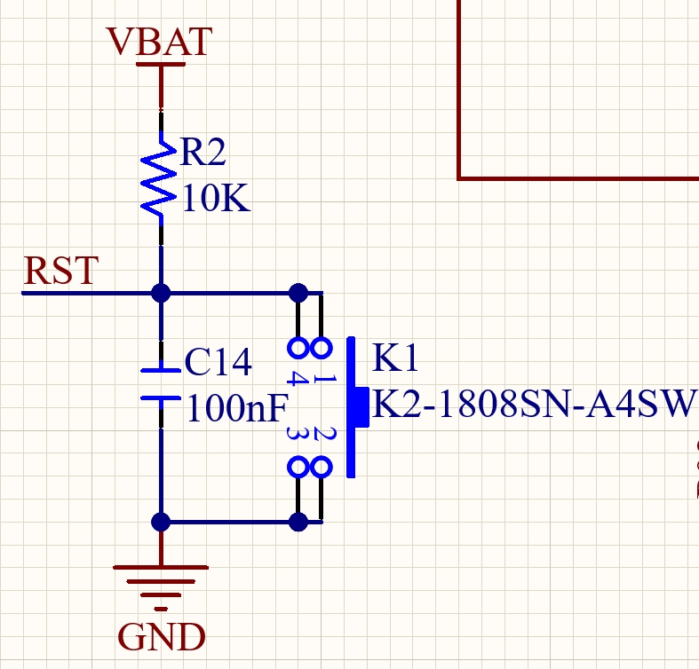
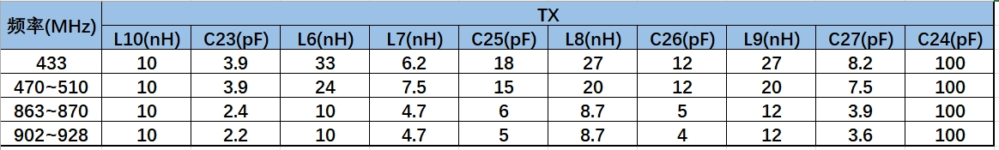
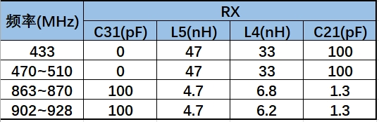
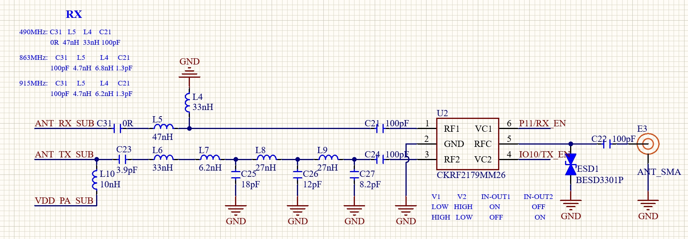
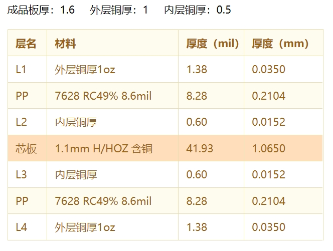
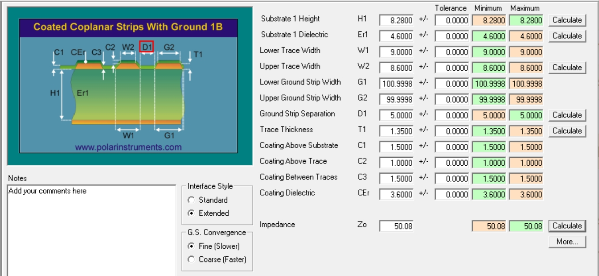

PAN3740 EVB 介绍与硬件参考设计¶
1 概述¶
本文档主要介绍基于 PAN3740 芯片方案的硬件原理图设计、PCB 设计建议。本文档提供 PAN3740 芯片外围电路的硬件设计方法。
2 原理图设计¶
2.2 电源¶
VBAT为芯片电源脚，要求瞬时供电能力不小于200mA，供电范围为LDO模式：1.8-3.6V；DCDC模式：2.0-3.6V ；
DVDD_SUB、DVDD_BLE、VBAT、DCDC_FB_SUB、VOUT_BK_BLE、VDD_FLASH至少预留1个电容，尽可能靠近芯片引脚；
VDD123_SUB、VDD_PA_SUB、VCC_RF_BLE至少预留1个电容，尽可能靠近芯片引脚；
2.2.1 DC-DC¶
BLE DC-DC 外围电路
外围电路组成为：L1、C15、C16；
推荐型号： PIM252010-2R2MTS00。
Sub-1G DC-DC 外围电路
外围电路组成为：L2、C17；
推荐型号：PIM252010-2R2MTS00。
2.2.2 DVDD¶
DVDD_BLE需要放置1uF电容、DVDD_SUB需要放置100nF电容。 电容最大不应超过1uF，否则会影响芯片正常启动，电容应靠近该引脚放置。
注意：为避免电路异常，该电容容值请不要随意更改！
2.3 晶振¶
2.3.1 32K晶振¶
为提供稳定的外部32KHz时钟，由Y3，C28，C29构成。此部分可以省略，由内部RC代替。
2.3.2 32M晶振¶
为MCU和BLE提供稳定的外部32MHz时钟，由Y2，C7，C8构成，其中晶振Y1型号为：XL7EL89CKI-111YLC-32M， C3，C4 = 10pF，此搭配的射频频率较为准确，为±10KHz左右。
为Sub-1G提供稳定的外部32MHz时钟，由Y3，C17，C22构成，其中晶振Y1型号为：XL7EL89CKI-111YLC-32M， C1，C2 = 10pF，此搭配的射频频率较为准确，为±10KHz左右。
2.4 复位电路 & 按键¶
复位引脚可以悬空，或增加外部按键。在按键应用中建议搭配电容使用，容值为100nF。加电容的作用是在系统受到强干扰时，稳定复位脚的电平状态。
注意：该引脚内部有一个50KΩ左右的上拉电阻，低电平会使复位生效。

按键复位电路¶
2.5 天线匹配¶
2.5.2 SUB-1G匹配¶
在Sub-1G应用中：
匹配元器件值需要根据 TR Switch 和 Layout 的不同微调；
电感 L10 推荐使用直流内阻小于 2 欧姆、额定电流大于 150mA 的器件。

Sub-1G TX匹配参数¶
RX匹配元器件值需要根据 TR Switch 和 Layout 的不同微调；

Sub-1G RX匹配参数¶

Sub-1G RF匹配电路¶
2.6 静电防护¶
2.6.1 IO端静电防护¶
使用的IO要预留串联电阻和ESD静电防护元件焊盘位置，便于过认证前的调试整改。串电阻的作用主要是减少IO信号的反射、降低外部毛刺信号干扰以及削弱静电对IO的影响。频繁与外部进行数据交换的IO例如使用USB功能脚等，必须使用TVS管进行保护。建议使用的TVS管类型如单向的ESD5Z3V3或双向的CESD923NC5VB，靠近外设接口位置摆放，ESD静电防护元件附近建议保留完整、连续的地，周围打尽量多过孔，有利电荷泄放。
2.6.2 电源端静电防护¶
电源输入端VBAT建议加上静电防护元件，若有静电进入可快速将电荷泄放到地，尽可能避免损坏芯片。ESD静电防护元件靠近电源输入端接口摆放。 可选择ESD5Z3V3。
2.6.3 天线端静电防护¶
无论是板载天线还是其他天线，本质上都是一段长导体，必然有概率吸引到静电电荷，为预防静电打坏芯片RF，天线端建议加上静电防护元件，必须使用低容值(小于0.5pF)、低钳位电压的TVS元器件，尽可能不影响RF阻抗，如JEB03SCDF。ESD静电防护元件靠近芯片摆放，若RF阻抗受到影响还可通过π匹配调整。在天线的位置放置一个ESD管。
推荐使用有馈地点的天线，板载天线推荐PIFA。
2.7 2.54mm连接器¶
为便于用户二次开发，该模块将所有GPIO全部引出，并兼容PAN107X_EVB底板。
3 PCB设计建议¶
3.1 制板工艺¶
本文主要针对四层板并且单面贴设计，叠层如下图所示。 PCB厚度需根据实际情况和阻抗要求适当调整。

制板工艺说明¶
*线宽推荐如下：
板材属性 |
参数 |
|---|---|
PCB板材 |
FR-4 |
PCB板厚 |
1.6mm |
50欧姆RF线宽 |
9mil |
接地铺铜与RF走线间距 |
5mil |

50ohm阻抗仿真图¶
3.3 射频走线注意事项¶
射频匹配链路按照50Ω走线，可以参考表层和邻层的GND平面，RF线需要结合叠构仿真阻抗模型，天线的π型匹配电路要靠近芯片ANT引脚，尽可能走线平滑，并联元件焊盘和走线重合为佳，降低阻抗突变。
RF线有完整的参考地，从IC端出来就进行包地处理，两边均匀的打GND过孔，底层到芯片底部地平面尽量宽；
晶振要远离天线和天线匹配链路、要靠近芯片引脚放置，晶振走线和其他走线垂直布线，减少晶振对RF的干扰，晶振中心铺铜挖空，周围包地；
天线辐射区域尽量保证没有金属器件；
4 匹配电路¶
注意：为保证射频性能最佳，建议由我司工程师进行样板射频参数校调！
5 BOM¶
单板BOM参考下表
品种 |
参数 |
型号 |
品牌 |
位号 |
封装 |
数量 |
|---|---|---|---|---|---|---|
贴片电容 |
10uF |
0402X106M100NT |
广东风华高新科技股份有限公司 |
C3 |
0402 |
1 |
贴片电容 |
4.7uF |
CL05A475MP5NRNC |
三星电子 |
C12, C15, C32 |
0402 |
3 |
贴片电容 |
1uF |
CL05A105KP5NNNC |
三星电子 |
C4, C17 |
0402 |
2 |
贴片电容 |
220nF |
CL05A224KP5NNNC |
三星电子 |
C6 |
0402 |
1 |
贴片电容 |
100nF |
CL05B104KO5NNNC |
三星电子 |
C5, C9, C10, C11, C13, C14, C16, C18, C30 |
0402 |
9 |
贴片电容 |
100pF |
0402CG101J500NT |
广东风华高新科技股份有限公司 |
C21, C22, C24, C33 |
0402 |
4 |
贴片电容 |
20pF |
0402CG200J500NT |
广东风华高新科技股份有限公司 |
C28, C29 |
0402 |
2 |
贴片电容 |
18pF |
0402CG180J500NT |
广东风华高新科技股份有限公司 |
C25 |
0402 |
1 |
贴片电容 |
12pF |
0402CG120J500NT |
广东风华高新科技股份有限公司 |
C26 |
0402 |
1 |
贴片电容 |
10pF |
0402CG100J500NT |
广东风华高新科技股份有限公司 |
C1, C2, C7, C8 |
0402 |
4 |
贴片电容 |
8.2pF |
0402CG8R2C500NT |
广东风华高新科技股份有限公司 |
C27 |
0402 |
1 |
贴片电容 |
3.9pF |
0402CG3R9C500NT |
广东风华高新科技股份有限公司 |
C23 |
0402 |
1 |
贴片电容 |
NC |
\ |
\ |
C19, C20 |
0402 |
2 |
贴片按键 |
4P-4.2mm x 3.25mm |
K2-1808SN-A4SW-01 |
东莞市韩荣电子有限公司 |
K1 |
SW-SMD(4.2x3.25x2.5) |
1 |
贴片电感 |
6.2nH 2% |
LQW15AN6N2C00D |
村田 |
L7 |
0402 |
1 |
贴片电感 |
10nH 2% |
LQW15AN10NG00D |
村田 |
L10 |
0402 |
1 |
贴片电感 |
27nH 2% |
LQW15AN27NG00D |
村田 |
L8, L9 |
0402 |
2 |
贴片电感 |
33nH 2% |
LQW15AN33NG00D |
村田 |
L4, L6 |
0402 |
2 |
贴片电感 |
47nH 2% |
LQW15AN47NG00D |
村田 |
L5 |
0402 |
1 |
贴片电感 |
10uH |
MLP2520S100MT0S1 |
TDK |
L2 |
SMD 2520 1.0mm |
1 |
贴片电感 |
2.2uH |
PIM252010 -2R2MTS00 |
广东风华高新科技股份有限公司 |
L1, L2 |
SMD 2520 1.0mm |
2 |
同轴连接器 |
插板 3Pin SMA |
KH-SMA-KE8-G |
深圳市金航标电子有限公司 |
E3 |
SMA |
1 |
同轴连接器 |
贴片ipex连接器-1代 |
KH-IPEX-K501-29 |
深圳市金航标电子有限公司 |
E2 |
ANT IPEX-1 |
1 |
直插连接器 |
Header 2x10,2.54mm |
PZ254V-12-20P |
XFCN(台湾兴飞) |
P1, P2 |
Header 2x10 |
2 |
贴片电阻 |
0Ω 1% |
0402WGF0000TCE |
厚声电子工业有限公司 |
C31, L3, R1, R3, R5, R6, R8, R10, R11 |
0402 |
9 |
贴片电阻 |
10KΩ 1% |
0402WGF1002TCE |
厚声电子工业有限公司 |
R2 |
0402 |
1 |
贴片电阻 |
NC |
\ |
\ |
R4, R7, R9 |
0402 |
3 |
贴片晶振 |
32MHz 10ppm 9pF |
XL7EL89CKI-111YLC-32M |
深圳扬兴科技有限公司 |
Y1,Y2 |
SMD 2016 4P |
2 |
贴片晶振 |
32.768KHz 12.5pF |
Q13FC13500005 |
EPSON |
Y3 |
SMD 3215 2P |
1 |
ESD管 |
BESD3301P |
双向静电ESD管 |
伯恩半导体有限公司 |
ESD1, ESD2 |
DFN1006-2L |
2 |
贴片IC |
SPDT Switch |
CKRF2179MM26-C4 |
CDK |
U2 |
SOT 363 |
1 |
贴片IC |
2.4G& BLE& Sub-1G SOC |
PAN3740 |
上海磐启微电子有限公司 |
U1 |
QFN48 6x6mm |
1 |